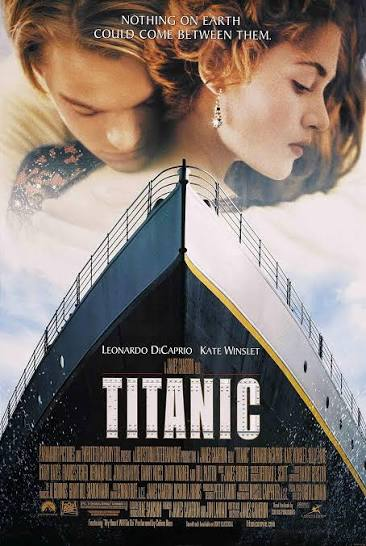

Jack Dawson
Interpretado por Leonardo DiCaprio
Joven artista de origen humilde que viaja en tercera clase. Es espontáneo, optimista y valiente. Se enamora de Rose durante el viaje.

HISTÓRICO · ROMANCE · DRAMA
En 1912, Jack Dawson y Rose DeWitt Bukater se conocen a bordo del Titanic, un lujoso transatlántico que realiza su viaje inaugural. Aunque pertenecen a clases sociales diferentes, comienzan una historia de amor que será marcada por uno de los desastres marítimos más conocidos de la historia.
Titanic
1997
James Cameron
James Cameron
Estados Unidos
194 minutos
Romance y drama histórico
Hundimiento del RMS Titanic en abril de 1912
Leonardo DiCaprio, Kate Winslet, Billy Zane y Kathy Bates
James Horner
La historia comienza cuando un grupo de exploradores busca un valioso collar en los restos del Titanic, hundido en el océano Atlántico. Una anciana llamada Rose reconoce un dibujo recuperado del barco y decide contar su experiencia durante el viaje.
En abril de 1912, Rose DeWitt Bukater, una joven de familia adinerada, aborda el Titanic acompañada de su madre y su prometido, Cal Hockley. Aunque vive rodeada de lujos, se siente atrapada por las expectativas de su familia y las reglas de la alta sociedad.
Durante el viaje, Rose conoce a Jack Dawson, un joven artista que consiguió su boleto para viajar en tercera clase. A pesar de sus diferencias económicas y sociales, ambos comienzan a desarrollar una profunda conexión emocional.
Jack le muestra a Rose una forma de vivir más libre y espontánea. Sin embargo, su relación provoca conflictos con Cal y con la madre de Rose, quienes rechazan la idea de que ella se enamore de alguien de una clase social inferior.
La situación cambia drásticamente cuando el Titanic choca contra un iceberg durante la noche del 14 de abril de 1912. El barco comienza a hundirse y los pasajeros intentan salvar sus vidas en medio del caos y la desesperación.
Jack y Rose luchan por permanecer juntos mientras el transatlántico desaparece bajo las aguas del Atlántico. La tragedia provoca la muerte de numerosas personas y pone en evidencia las desigualdades sociales existentes en aquella época.
Finalmente, Rose sobrevive y conserva el recuerdo de Jack, quien pierde la vida después del hundimiento. La película combina una historia de amor ficticia con un acontecimiento histórico real.
Interpretado por Leonardo DiCaprio
Joven artista de origen humilde que viaja en tercera clase. Es espontáneo, optimista y valiente. Se enamora de Rose durante el viaje.
Interpretada por Kate Winslet
Joven de la alta sociedad que desea escapar de las obligaciones impuestas por su familia. Su relación con Jack transforma su manera de comprender la libertad y el amor.
Interpretado por Billy Zane
Prometido de Rose. Es un hombre adinerado, orgulloso y controlador que considera el matrimonio como parte de su posición social.
Interpretada por Kathy Bates
Pasajera de primera clase basada en una persona real. Se caracteriza por su carácter amable, independiente y solidario.
Interpretada por Frances Fisher
Madre de Rose. Desea mantener la posición económica y social de su familia, por lo que insiste en que su hija se case con Cal.
Interpretado por Bernard Hill
Capitán del Titanic, inspirado en el verdadero Edward John Smith. Es responsable de dirigir el barco durante su viaje inaugural.
Fue un transatlántico británico de pasajeros que inició su viaje inaugural el 10 de abril de 1912, desde Southampton con destino a Nueva York.
La noche del 14 de abril de 1912, el barco chocó contra un iceberg. Se hundió durante la madrugada del 15 de abril, causando la muerte de más de 1,500 personas.
Los pasajeros viajaban en diferentes clases según su capacidad económica. La película utiliza estas diferencias para representar la desigualdad social de principios del siglo XX.
Titanic pertenece a la narrativa de ambientación histórica porque recrea un acontecimiento real ocurrido en 1912: el hundimiento del RMS Titanic. Aunque Jack y Rose son personajes ficticios, su historia se desarrolla dentro de un contexto histórico documentado. La película representa aspectos sociales, culturales y tecnológicos de principios del siglo XX.
Nuestra siguiente película se desarrolla durante la Segunda Guerra Mundial y presenta una historia de amistad en medio de la persecución nazi.